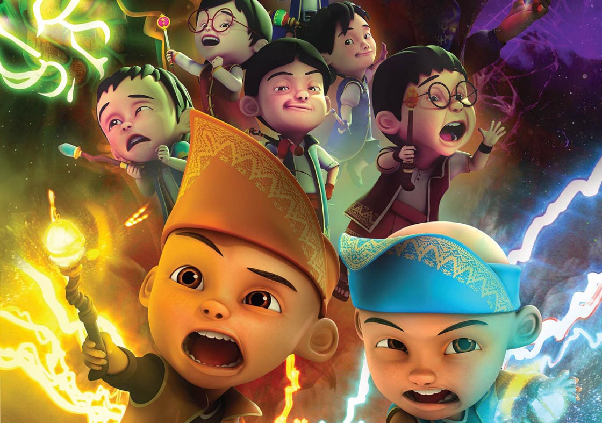

About Upin Ipin
Malaysian television series produced by Les' Copaque Production, which features the life and adventures of the eponymous twin brothers in a fictional Malaysia.
Footage from film 'Keris Siamang Tunggal (2019)'
Upin Ipin's Characteristic
- They are from 'Kampung Durian Runtuh'
- They live with Opah and Kak Ros
Friends
Upin Ipin has some awesome and cool friends. Click on the links below to read more about them :